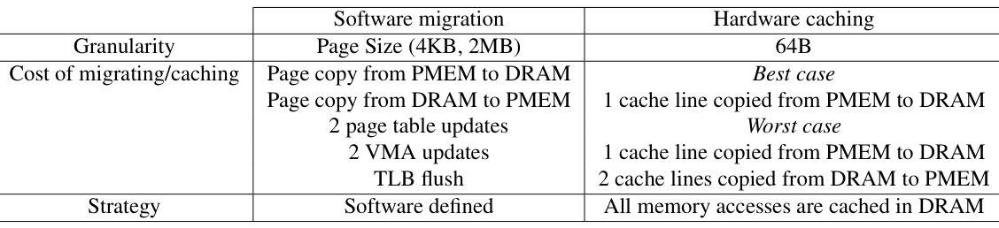
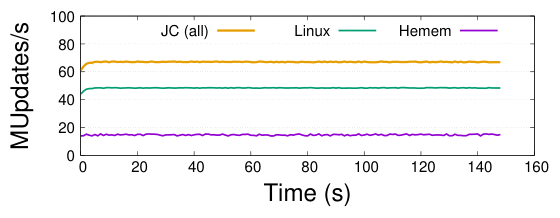
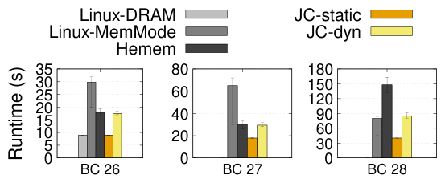
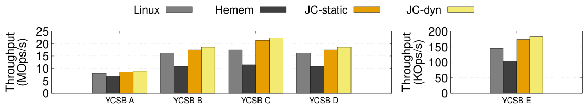
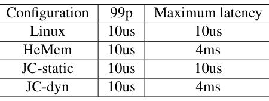
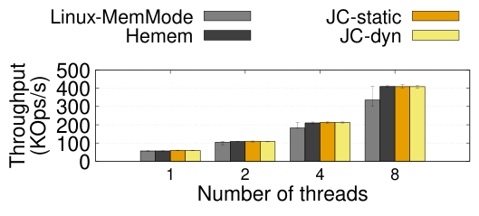
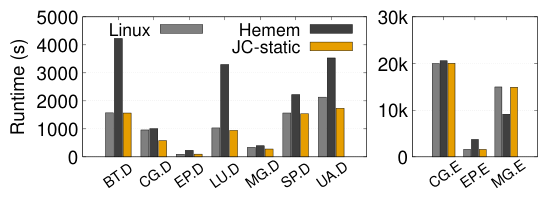

Johnny Cache: the End of DRAM Cache Conflicts (in Tiered Main Memory Systems)
This page was written by an AI model to give a high-level overview of the paper. Please check the paper for detail: USENIX.
Tiered main memory systems pair DRAM with a slower, cheaper tier (PMEM, SSD, or CXL-attached memory) to get more capacity than DRAM alone can afford. Almost every deployed system manages this tier in software: a daemon samples memory accesses, decides which pages are hot, and migrates hot pages into DRAM and cold pages out. HeMem, the state-of-the-art software migration system the paper compares against, is one such daemon. A different option exists in hardware: Intel's Optane "memory mode" configures DRAM as a direct-mapped cache in front of PMEM, so every access is transparently and synchronously served from whichever tier currently holds the data, at cache-line granularity.
Prior work concluded that this hardware caching approach performs poorly, because a direct-mapped cache indexed by physical address suffers frequent conflicts: two pages that happen to map to the same cache slot fight over it, and evicting a dirty line can cascade into writing back multiple lines to the slow tier. The paper's own measurements confirm the eviction path is expensive, a read or write that triggers two PMEM writebacks is 7 to 10 times slower than the equivalent DRAM access. The conventional wisdom was therefore that software migration, despite its own costs (page-granularity moves, kernel metadata updates, TLB flushes, and the need to sample accesses accurately), was the more viable path.
The paper's key observation is that the conflicts blamed on hardware caching are not inherent to caching itself, they come from Linux's page allocation policy, which places pages in physical memory without any regard for where they will land in the DRAM cache. Because the cache is large but finite, allocating pages carelessly runs into a birthday-paradox effect: many pages end up mapping to the same small set of cache slots even though most slots are free. The fix proposed is to make the kernel's page allocator aware of cache placement. A static policy spreads newly allocated pages evenly across cache slots (bins), independent of any access monitoring, so that the same number of pages maps to every bin. A dynamic policy additionally tracks page "heat" with the same hardware sampling HeMem uses, allocates new pages to the coldest bin, and runs a background daemon that remaps pages only when two hot pages collide in the same bin.
Both policies are implemented inside the Linux kernel as hooks on page allocation and page fault/unmap, in a subsystem the authors call Johnny Cache (JC). The static policy (JC-static) needs no monitoring at all: it just counts, per cache bin, how many pages are currently allocated there, and always serves the next page fault from the least-occupied bin. The dynamic policy (JC-dyn) reuses HeMem's PEBS-based heat sampling and cooling logic so the two systems can be compared on equal footing, but applies that information to avoid conflicts between hot pages rather than to migrate pages between tiers.
On a real two-node Optane DRAM+PMEM machine, running HeMem's own workloads (a GUPS microbenchmark, the BC graph algorithm, the Masstree key-value store, the Silo database, and the NAS HPC suite), JC outperforms both unmodified Linux and HeMem on nearly every workload, by up to 5x in some configurations. The surprising headline result is that JC-static, which does no access monitoring at all, is usually enough: it matches or beats JC-dyn and HeMem because it avoids the CPU overhead and the asynchronous, large-volume data movement that profiling-based migration requires. The one class of workload where hardware caching loses is uniform or streaming access over a dataset much larger than the cache (the NAS MG.E benchmark), where HeMem's software migration wins by 1.8x.

Key takeaways
- Hardware DRAM caching (Intel Optane "memory mode") was believed to perform poorly because of cache conflicts; the paper shows the conflicts come from Linux's cache-oblivious page allocator, not from caching itself.
- JC-static: allocate each new page to the cache bin (physical address mod cache size) with the fewest resident pages. No access monitoring, no runtime overhead.
- JC-dyn: adds HeMem-style PEBS heat sampling, allocates new pages to the coldest bin, and a daemon remaps pages only when two hot pages conflict in the same bin, not to move hot data between tiers.
- Across GUPS, BC, Masstree, Silo, and NAS, JC equals or beats both default Linux and HeMem, by up to 5x in some workloads; JC-static alone is usually enough to reach close-to-optimal, DRAM-level performance.
- Hardware caching loses only when data has no clear hot subset relative to the cache size, e.g., uniform/streaming access (NAS MG.E), where HeMem's software migration still wins.
From a conflicted cache to a conflict-avoiding allocator
What software migration and hardware caching each cost, why Linux's allocator creates conflicts, and how JC's static and dynamic policies remove them.
1 · Two ways to manage a tiered memory system
In software migration (used by HeMem, Thermostat, AutoNUMA, Nimble, and others), the OS allocates pages in DRAM until it fills up, then spills to the slow tier; a daemon samples accesses and migrates hot pages to DRAM and cold pages out. In hardware caching (Intel's memory mode), DRAM is configured as a cache: the memory controller looks up physical address W at cache slot "W mod cache size". A miss fetches W from PMEM into DRAM and the CPU cache. A conflict happens when W's slot already holds another line X: if X is clean the cost is a PMEM read; if X is dirty, X must be written back to PMEM first, and evicting a dirty CPU cache line can itself cascade into writing back another line from DRAM to PMEM.
| Access | Latency |
|---|---|
| Read in DRAM | 96 ns |
| Write in DRAM | 130 ns |
| Plain read from PMEM | 305 ns (3.2x DRAM) |
| Plain write to PMEM | 578 ns (4.4x DRAM) |
| Read/write causing 2 writebacks to PMEM | 938 ns (9.7x a DRAM read, 7.2x a DRAM write) |
So caching is cheap when it hits and expensive when it conflicts, while migration is always page-granularity (4 KB or 2 MB), requires page table and VMA updates plus TLB flushes, and depends on accurately detecting hot pages before moving them. Section 2 of the paper walks through both costs in detail; see the Evaluation tab for how they play out on real workloads.
2 · Why Linux's default allocator creates conflicts
Linux's default page allocator places pages wherever is physically convenient for the local NUMA node, without regard for where the resulting physical address lands in the DRAM cache. Because the cache is large but finite, and many more pages exist than cache slots, this is a birthday-paradox problem: even though most cache slots are available, many pages still end up mapping to the same small subset of slots. The paper measures that with this policy, a 100 GB allocation on their machine uses on average only 32 GB of a 48 GB DRAM cache, because the allocated pages map to a subset of the available slots rather than spreading across all of them. Any array larger than two pages can conflict with itself, and the larger the array the more likely two of its pages collide.
3 · The static policy: spread pages evenly at allocation time
If the DRAM cache can hold D pages, the static policy's goal is simple: allocate the first D pages so that each maps to a different cache slot, the next D pages so each conflicts with at most one other page, and so on. This requires no access monitoring and runs with no measurable overhead.
4 · The dynamic policy: heat-aware allocation plus a remapping daemon
The dynamic policy adds two things on top of the static idea. First, at allocation time, a new page goes to the cache slot (bin) with the lowest current heat, not just the fewest pages. Second, a background migration daemon watches for bins that hold two or more hot pages at once; when it finds one, it remaps one of the conflicting pages to a different, colder bin. Heat is measured with Intel's Processor Event-Based Sampling (PEBS), sampling reads to the DRAM cache, reads to PMEM, and all stores, using the identical heat definition and cooling function as HeMem, so that comparisons between JC-dyn's conflict avoidance and HeMem's hot/cold migration are not confounded by different heat-detection quality.
- On a sampled access, the heat of the accessed page and its bin is incremented.
- A page is cooled once its heat reaches double the hot-page threshold ("super hot"), to stop heat from drifting upward indefinitely.
- On allocation, a new page's bin heat is artificially bumped, so bursts of allocation do not pile multiple new pages onto the same bin before sampling catches up.
- The daemon wakes when a bin accumulates two or more hot pages, and remaps one of them: it calls the normal page-fault path to get a page in a colder bin, then unmaps the old page, which lowers the old bin's heat.
5 · Implementation: a kernel framework of bins and heat
Both policies are implemented as a common Linux kernel framework (the JC subsystem) with hooks at kernel boot, page allocation, page fault, and page unmap. At boot, the kernel queries the memory controller for the DRAM cache size (the cache capacity in pages). Because the cache is directly mapped, every physical page has a unique bin: its page frame number modulo the cache capacity. The framework keeps, per bin, lists of available and fully-allocated pages sorted by heat (avail_bins[heat], full_bins[heat]), using lazy allocation exactly as Linux's default allocator does (a page is physically allocated only on first access). A page fault is served from the lowest-heat bin with free pages; a page unmap decrements that bin's heat. The policies plug into this framework only by defining what happens on a page fault and a page unmap, roughly 10 lines of code for the static policy. Total metadata overhead is under 50 MB for a machine with 128 GB DRAM and 1 TB PMEM. The policies operate globally across the whole machine, independent of application or thread boundaries, so conflicts between pages from different applications are minimized together, unlike cache-partitioning schemes such as page coloring.
6 · Design assumptions and known limits
- Direct-mapped, 1-way cache. The design targets Intel's memory mode, which is 1-way and indexed by physical address modulo cache size. The paper notes that accounting for N-way associativity would only require redefining a "conflict" as N+1 or more pages per bin, not a different approach.
- No NUMA-aware placement. As in the original HeMem evaluation, cross-NUMA-node tiering effects are out of scope; experiments run on a single NUMA node.
- No cache partitioning. JC avoids conflicts machine-wide rather than giving each application a fixed share of the cache; the paper notes page coloring could be layered on top if per-application isolation is needed.
- Hardware caching struggles when nothing is "hot." When an application accesses a large dataset uniformly or in a streaming pattern, cached data is evicted before it is ever reused, so effectively every access misses to PMEM. Software migration can still place some of that data in DRAM, so it wins in this specific case.
How these design choices translate into measured throughput, latency, and runtime across GUPS, BC, Masstree, Silo, and NAS is covered in the Evaluation tab.
Evaluation
What the paper measures on a real Optane machine, its key figures and tables in the paper's order, and what each one shows.
All experiments run on a real two-socket Optane DRAM+PMEM machine. JC-static and JC-dyn (Linux's memory mode plus the paper's static or dynamic allocator) are compared against unmodified Linux (memory mode with the default Linux page allocator) and HeMem (the state-of-the-art software migration system, run from its published artifact). Workloads are borrowed directly from the HeMem paper so the comparison uses the same benchmarks HeMem was originally evaluated on.
| What | Value in the paper |
|---|---|
| Platform | Two-node NUMA server, 40 Intel Xeon Gold 6230 cores (20/node) at 2.10 GHz, 128 GB DRAM, 8x128 GB Intel Optane NV-DIMMs (64 GB DRAM + 512 GB PMEM per node). Memory-mode DRAM cache: 48 GB per node (16 GB reserved for cache metadata) |
| Workloads | GUPS (random 8 B updates, tunable hot/cold split and clustering); BC (GAP suite betweenness centrality on a powerlaw graph, scales 26 to 28); Masstree (in-memory KV store, YCSB A to E, 120 GB DB, 1 billion 128 B items); Silo (in-memory DB, TPC-C, 100 GB DB); NAS Parallel Benchmarks (HPC suite, classes D and E) |
| Baselines | Unmodified Linux (memory mode, default page allocator) and HeMem (software page migration, PEBS-based hot/cold detection) |
| Metrics | Throughput (MUpdates/s, MOps/s, KOps/s), percentage of performance vs. all-data-in-DRAM, iteration/application runtime (s), 99th-percentile and maximum observed latency |
GUPS with scattered hot values: JC is 4.5x faster than HeMem

What it shows. With 16 GUPS threads plus 2 dedicated profiling/migration cores, and hot values (20% of the DRAM cache size) scattered randomly across a 96 GB array rather than clustered, the plot tracks MUpdates/s over time for JC (all configurations, since static and dynamic perform the same here), Linux, and HeMem. JC is 4.5x faster than HeMem and reads on average 7x less data from PMEM. HeMem cannot bring most hot pages into DRAM because, once hot items are spread across nearly every page, the number of pages containing hot data exceeds what fits in DRAM (the paper notes even 1% hot data, 1 GB, touches on the order of 134 million values, enough to make nearly every page in a 100 GB array hold some hot data).
What to take from it. Hardware caching operates at cache-line granularity, so even when hot items are scattered one-per-page, they rarely conflict with each other in the cache; the hot items simply do not need to share a page to coexist in DRAM. Software migration, which moves whole pages, cannot separate hot bytes from cold bytes on the same page, so it is structurally worse at this access pattern. For context, when hot values are instead clustered on a few pages (the scenario favoring migration, not shown in a figure provided with this summary), the paper reports JC-dyn and HeMem both eventually reach 100% of DRAM performance with enough threads (16+2), JC-static reaches about 85%, and Linux's default allocator reaches only about 60%, because of the conflicts described in the How It Works tab. HeMem's and JC-dyn's advantage there comes at a steep sampling-rate tuning cost: with fewer threads (8+2) HeMem fails to reach steady state even after two minutes, while JC-static, needing no sampling, is unaffected by thread count.
BC: JC-static is up to 5x faster than HeMem, and matches DRAM on the smallest scale

What it shows. Average iteration runtime of the betweenness centrality algorithm at three increasing scales (BC 26, 27, 28), lower is better, for Linux-DRAM (all data manually placed in DRAM, which runs out of memory at scales 27 and 28), Linux-MemMode, HeMem, JC-static, and JC-dyn. JC-static outperforms Linux by up to 3.2x and HeMem by up to 2x, and matches Linux-DRAM at scale 26. At scale 28, where the hot dataset no longer fits in DRAM, JC-static is 5x faster than HeMem, and HeMem is slower than default Linux.
What to take from it. BC is an OpenMP application whose threads synchronize at barriers, so any single thread delayed by profiling or migration overhead stalls the whole computation. With HeMem or JC-dyn running, BC 26 spends 50% of its time waiting at barriers, versus 2.5% for JC-static, which adds no per-thread overhead. At scale 28, HeMem additionally migrates about 40 GB of data over the run, continuously contending for PMEM bandwidth and worsening the imbalance; JC-dyn migrates far less (about 4 GB on average) because it only fixes conflicts, not misplacement. JC-static benefits from a pattern the authors found common in HPC code: BC allocates its hot 10 GB array up front, so the static policy spreads it across non-conflicting bins once, with no need for ongoing migration.
Masstree: JC outperforms Linux and HeMem by up to 2x on YCSB

What it shows. Masstree throughput on YCSB workloads A through E (120 GB database, 1 billion 128 B items, Zipfian access where 20% of the dataset gets 80% of accesses), comparing Linux, HeMem, JC-static, and JC-dyn. JC outperforms both Linux and HeMem by up to 2x across the workloads. On average, 45% of Masstree's memory accesses still hit PMEM under HeMem, versus 15% under JC-static and 14% under JC-dyn.
What to take from it. Masstree's access pattern resembles GUPS with scattered hot values: because keys and index nodes are inserted in roughly random order, hot items end up spread across most pages, so software migration cannot concentrate them into DRAM. The gap between JC-static and JC-dyn is small (15% vs. 14% of accesses hitting PMEM) because conflicts between the hottest 128-byte items in a 48 GB cache are already unlikely by chance, so active conflict avoidance adds little beyond static spreading.
Migration daemons cause millisecond-scale latency spikes that static caching avoids

What it shows. Maximum observed latency on the YCSB workload for Linux, HeMem, JC-static, and JC-dyn. All four systems have the same excellent 99th-percentile latency (10 microseconds). But maximum latency is 10 microseconds for Linux and JC-static, versus 4 milliseconds for HeMem and JC-dyn.
What to take from it. The spikes come from the migration daemon itself: it periodically wakes, blocking and unblocking in a way the scheduler sometimes colocates with a Masstree worker thread on the same core, preempting that thread for up to 4 ms even though the daemon runs on fewer threads than cores. Any system (JC-dyn or HeMem) that runs an active background migration or remapping daemon inherits this tail-latency risk; JC-static, which never runs such a daemon, does not.
Silo (TPC-C): JC and HeMem tie, both ahead of Linux

What it shows. Silo throughput running TPC-C on a 100 GB database, varying the thread count from 1 to 8, for Linux-MemMode, HeMem, JC-static, and JC-dyn. JC and HeMem perform about equally well across thread counts, and both outperform default Linux.
What to take from it. TPC-C's skew (most accesses hit customer and warehouse metadata, not the much larger item-description data) means the hot working set is allocated early in the database's initialization, letting both JC's static spreading and HeMem's migration place it correctly from early on. This is the one workload where JC's usual edge over HeMem (lower CPU and migration overhead) does not translate into a throughput win, because HeMem's migrations here are not costly enough to matter.
NAS benchmarks: JC wins by up to 2.8x, except when the hot set vastly exceeds the cache

What it shows. Runtime (lower is better) of NAS Parallel Benchmark applications at class D (smaller, left group: BT, CG, EP, LU, MG, SP, UA) and class E (larger, right group: CG, EP, MG) for Linux, HeMem, and JC-static. At class D, where hot arrays fit in the DRAM cache, JC and Linux outperform HeMem by up to 2.8x. At class E, JC still wins on CG.E and EP.E, but on MG.E, HeMem runs 1.8x faster than JC despite HeMem's own profiling overhead.
What to take from it. Most NAS applications follow the same allocate-once, access-a-subset pattern as BC, which favors JC-static's one-time conflict-free placement and avoids the barrier-stalling overhead that HeMem's and JC-dyn's profiling threads impose on OpenMP codes. MG.E is the counterexample: it accesses a large array uniformly, so almost every item is equally "hot" and cached data is evicted before reuse, meaning hardware caching resolves close to 100% of accesses to PMEM regardless of allocation policy. Software migration can still place some fraction of that uniformly-accessed data permanently in DRAM, which is why HeMem wins there.
FAQ
Q·What is "Johnny Cache" actually a name for?▾
It is the paper's name for the Linux kernel subsystem implementing both the static and dynamic conflict-avoiding page allocation policies. JC-static refers to memory mode plus the static policy, and JC-dyn to memory mode plus the dynamic policy and its migration daemon.
Q·Wasn't hardware DRAM caching already shown to perform poorly? What changed?▾
Prior work observed poor performance from Intel's memory mode and concluded the hardware approach itself was flawed. This paper traces that poor performance to Linux's page allocation policy, which ignores where a page's physical address lands in the cache and therefore creates frequent conflicts. With a cache-aware allocator, the same hardware caching mechanism performs close to optimally on most of the tested workloads.
Q·How is this different from software migration systems like AutoNUMA, Thermostat, or HeMem?▾
Those systems move data between a fast and a slow memory tier based on measured access frequency, which requires monitoring, page-table or VMA updates, TLB flushes, and asynchronous data copying. JC instead leaves data caching to the hardware (Optane memory mode) and only changes which physical address, and therefore which cache slot, a new page gets. JC-dyn uses the same heat-sampling machinery as HeMem, but to avoid cache conflicts rather than to decide what to migrate.
Q·What exactly is a "conflict" in the DRAM cache?▾
Intel's memory mode configures DRAM as a direct-mapped (1-way) cache: a physical address maps to exactly one cache slot, computed as the address modulo the cache size. A conflict occurs when two different pages map to the same slot; accessing one evicts the other, and if the evicted line is dirty it must be written back to PMEM, sometimes triggering a further writeback from a CPU cache line.
Q·What's the actual difference between JC-static and JC-dyn?▾
JC-static allocates each new page to whichever cache bin currently holds the fewest allocated pages, and does no runtime monitoring. JC-dyn additionally tracks each page's access "heat" using PEBS sampling, allocates new pages to the coldest bin rather than just the least-occupied one, and runs a background daemon that remaps a page when two hot pages end up sharing the same bin.
Q·If JC-dyn has more information, why does it often not beat JC-static?▾
JC-dyn's profiling and migration threads consume CPU cycles and can preempt application threads, which is especially costly for OpenMP applications (BC, NAS) that synchronize at barriers: delaying one thread stalls all of them. Its sampling-based heat detection is also sensitive to tuning (too high a sampling rate adds overhead, too low misses hot pages) and to the number of application threads generating samples. Because conflicts between the truly hottest items are already rare once pages are spread evenly, the extra precision from dynamic tracking buys little, while its overheads are real.
Q·Does this approach require changing the application?▾
No. Both policies are implemented entirely in the kernel's page allocation and fault/unmap paths, and are oblivious to which thread or application a page belongs to. Applications run unmodified.
Q·When does hardware caching lose to software migration?▾
When an application has no clear hot subset relative to the cache size, specifically uniform or streaming access over a dataset much larger than the DRAM cache, such as the NAS MG.E benchmark. There, cached data is evicted before it is reused regardless of allocation policy, so caching resolves nearly every access to the slow tier, while software migration can still permanently park some fraction of the data in DRAM.
Q·How does the migration daemon decide when to act?▾
It wakes when a cache bin is found to contain two or more pages that are both classified as hot (using the same PEBS-based heat and cooling thresholds as HeMem). It then remaps one of the conflicting pages to a colder bin via the normal page-fault path. This mirrors HeMem's trigger condition (migrate as soon as a hot page is detected) to keep the comparison fair, but the remapping only resolves a conflict rather than moving data between tiers.
Q·Why do software migration daemons need dedicated CPU cores, and what does that cost?▾
Accurately detecting hot pages requires sampling memory accesses continuously, which the paper implements via Intel PEBS interrupts; running this sampling and the migration logic competes for CPU with the application if not given dedicated cores. Even with dedicated cores, other cores still handle the performance-monitoring-unit interrupts generated by sampling. The paper measures that doubling GUPS's sampling rate can reduce its own throughput by 20% from profiling overhead alone, and for OpenMP applications like BC, any delay to one profiling-affected thread stalls all threads waiting at a barrier.
Q·Does the paper's conclusion apply beyond Intel Optane, e.g., to CXL memory?▾
The paper only measures Optane memory mode, the only commercially available hardware DRAM cache at the time, but it argues the underlying tradeoff (software migration pays profiling and large-scale data-movement overhead regardless of the underlying technology, while conflict avoidance at allocation time is comparatively cheap) should generalize to other cacheable disaggregated memory, including future CXL-attached memory. This broader applicability is the paper's argument, not a measurement on CXL hardware (general knowledge: no CXL results are reported).
Q·What is PEBS and why do both JC-dyn and HeMem use it?▾
Processor Event-Based Sampling is an Intel CPU feature that can sample memory accesses (reads, writes) with information about the address touched, used to estimate which pages and cache locations are frequently accessed. JC-dyn deliberately reuses HeMem's exact PEBS configuration, heat definition, and cooling function, so that any performance difference between the two systems reflects what they do with the heat information (migrate vs. avoid conflicts), not differences in how well each detects hot pages.
Q·What does Table 3's latency result actually mean for a real database?▾
It shows that systems with an active background daemon (HeMem, JC-dyn) can occasionally delay a request by up to 4 ms, even though typical (99th-percentile) latency is excellent at 10 microseconds for all four systems. For latency-sensitive services, this means the choice between JC-static and JC-dyn is not just about average throughput but also about tail-latency predictability, where the daemon-free JC-static has an advantage.